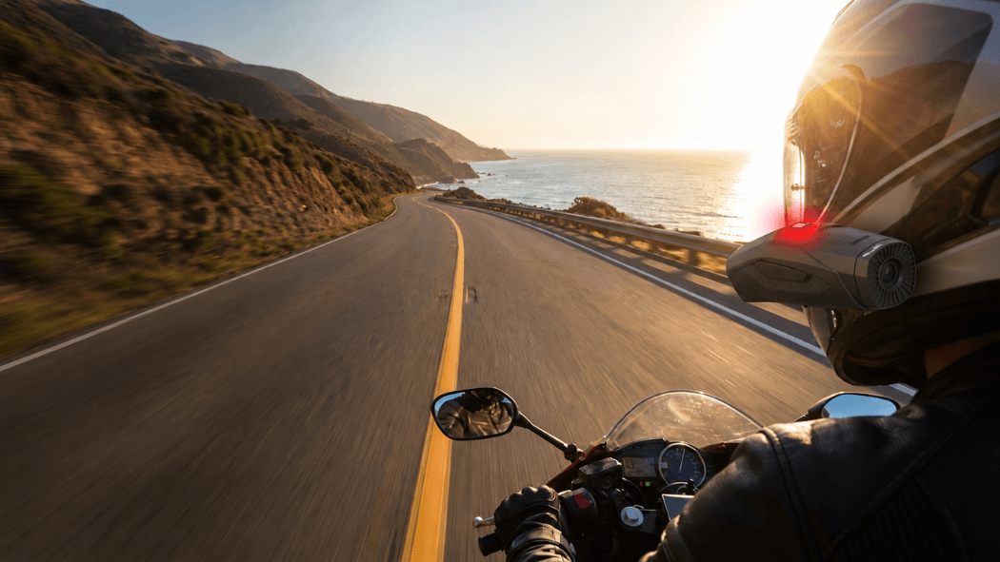
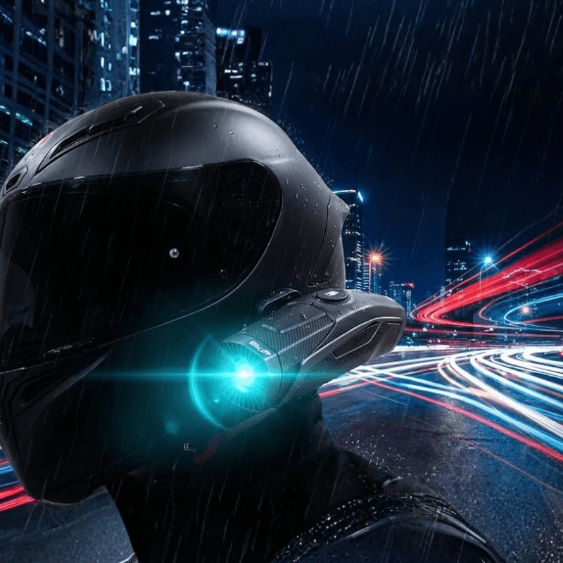
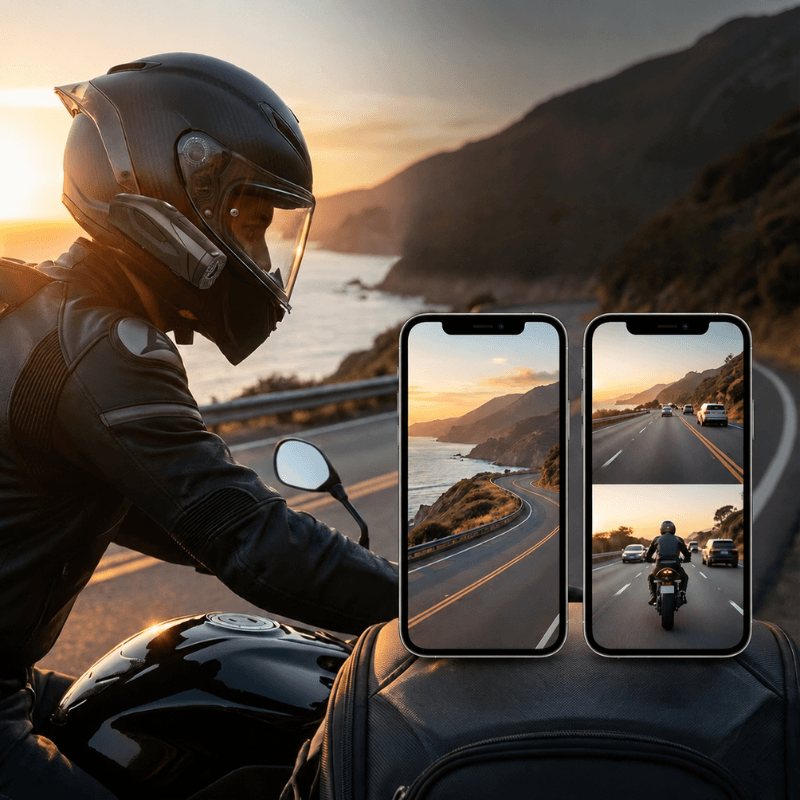
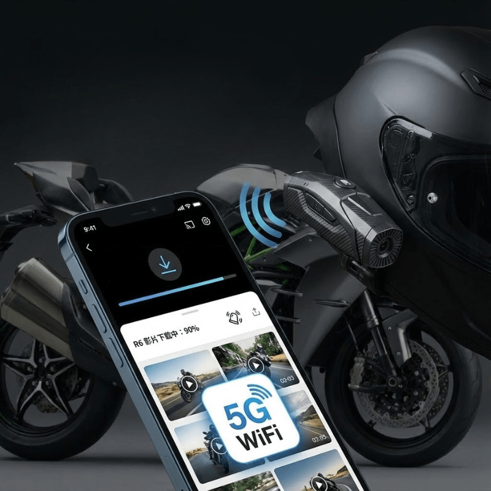
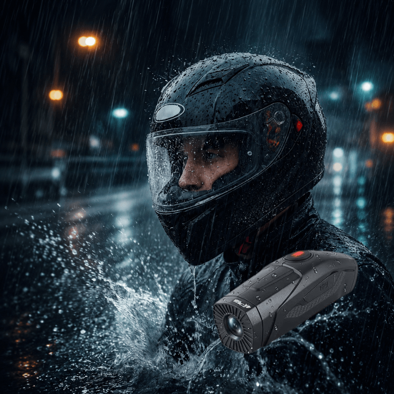
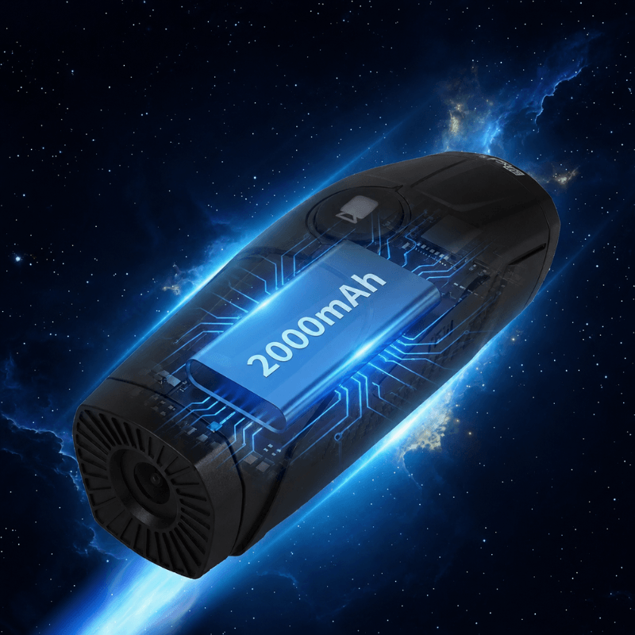

前後鏡頭同步錄影，完整記錄旅程中的每一個瞬間。 無論是沿途風景、突發狀況，還是值得回味的騎行時刻，都能安心保存，留下更完整的影像紀錄。


支援 4K、2K 與 1080P 多種錄影模式。 單鏡頭錄影最高支援 4K UHD 畫質，雙鏡頭同步錄影最高支援 2K 高畫質錄影，兼顧畫面細節與完整紀錄，讓每段旅程都更加清晰。
透過手機即可快速查看、下載與分享錄影內容。 搭配碰撞鎖檔功能，當發生撞擊或異常震動時，系統將自動保存重要影片，讓關鍵畫面不怕遺失。


具備 IP67 防護等級，能有效抵禦雨水與灰塵侵擾。 無論日常通勤、戶外活動或雨天騎行，都能穩定運作，陪伴每一次出發。
內建 2000mAh 電池，支援快速充電。 單鏡頭 4K 錄影模式下最長可達約 5 小時錄影時間，滿足日常通勤、長途旅行與戶外活動需求。

透過官方直營電商平台購買 R6，享有完整保固與售後支援。
Western Markets
Japan Market
Taiwan Market
一般規格
影像與錄影
鏡頭與功能
儲存與電池